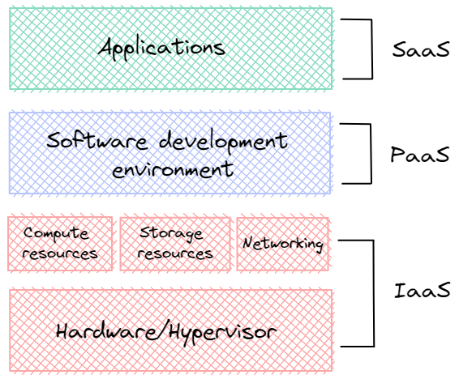

AWS Cloud. Definition and characteristics
2022-11-12The need to accelerate building and deploying software and high cost of local data centers are two main reasons for Cloud popularity.
What is Cloud?
Simplified, Cloud can be defined as data center that is not yours.
The National Institute of Standards and Technology (NIST) provides more descriptive definition:
Cloud computing is a model for enabling ubiquitous, convenient, on-demand network access to a shared pool of configurable computing resources (networks, virtual machines, storage, applications, and services) that can be rapidly provisioned and released with minimal management effort or service provider interaction.
Clouds are divided into three types by location and ownership:
-
Public — managed by an organization and open to use by the public.
-
Private — virtualizes and distributes the IT infrastructure for a single organization.
-
Hybrid — a mixture of a public and a private cloud.
Cloud computing services also have several classifications:
-
Infrastructure as a service (IaaS) — fundamental resources like computing, storage, and networking capabilities, using virtual machines (Amazon EC2).
-
Platform as a service (PaaS) — platforms to deploy custom applications to the cloud (AWS Elastic Beanstalk).
-
Software as a service (SaaS) — combines infrastructure and software running in the cloud (Amazon WorkSpaces).

AWS is the most popular public cloud that contains IaaS, PaaS, and SaaS.
Characteristics
According to NIST, five key definitions of the public cloud have transformed into a definitive standard methodology of operating in the public cloud:
-
On-demand self-service - almost instant availability after requesting a cloud service.
-
Broad network access - accessibility from practically anywhere across the globe using the Internet.
-
Resource Pooling - polling together infrastructure resources in many data centers across the different regions of the world and dynamically assigning them on demand.
-
Rapid Elasticity - scaling for both compute and storage.
-
Measured Service - billing for only what you use.
Benefits
Unlimited access to servers and storage and many management services should make it easier to operate in the cloud.
-
Servers - reducing costs on hosting physical servers
-
Storage - unlimited amount of storage with the wide range of options
- File systems - Windows and Linux
- S3 - Simple Storage Service for static assets and archived storage
- RDS - relational database service solutions
- DynamoDB — a horizontally scalable transactional database service
- etc.
-
Managed services - a variety of managed services
- Monitoring - CloudWatch monitoring providing metrics for every AWS service
- Data backup - Veritas and Commvault have AWS solutions
- Scale - EC2 Auto Scaling
- etc.
Limitations or “everything fails all the time”
Cloud consumer should fully understand SLA (Service Level Agreement) given by cloud provider. There is no way AWS can provide zero outage. In case of failure credit is promised to be given. To receive credit if you were down, you will have to prove that you were actually down by providing network traces and appropriate documentation proving that issue was caused by AWS cloud.
Another important point is that redundancy must be built into application design. Application should continue to operate even if compute and storage failures occur.
Sources: